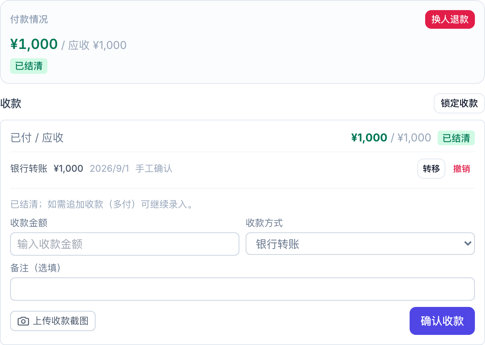
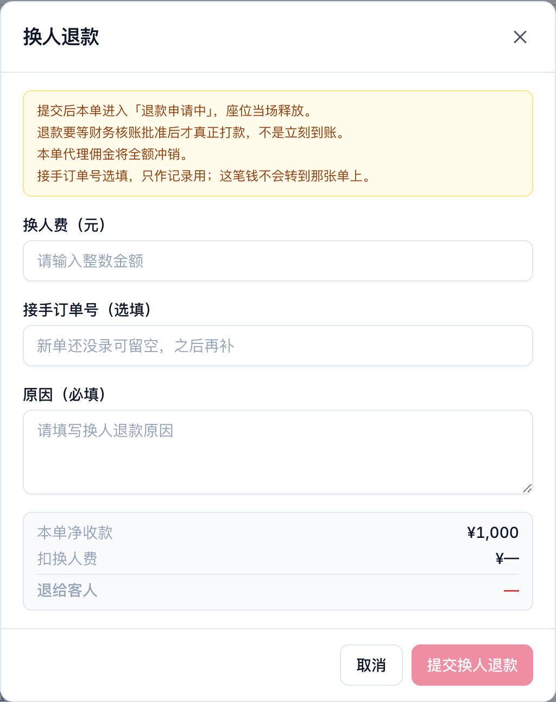
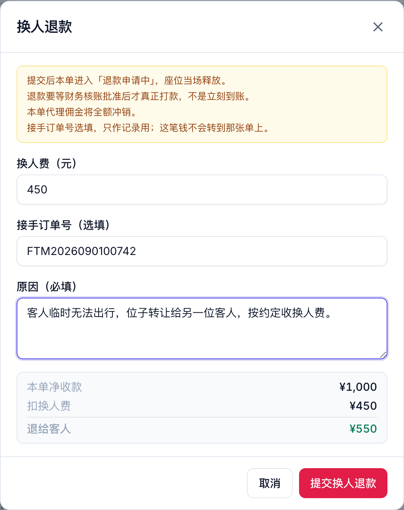
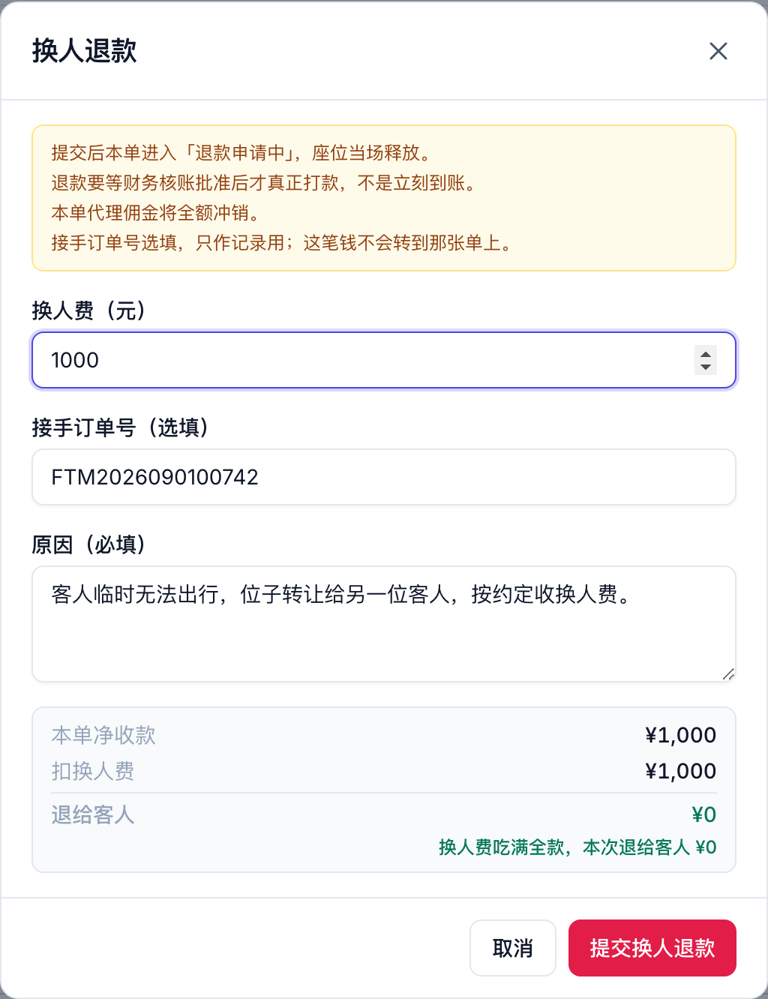

客人临时去不了、位子转让给别人时怎么在系统里走 · 2026-09-01
客人下了单也付了钱，临时告诉你去不了，让你帮忙把位子代卖出去。找到接手的人之后，他按当天的价另开一张全新的单。
公司对原来那位客人收一笔换人费，剩下的钱退给他。比如他当初交了一千，换人费扣四百五，就退五百五给他。
订单详情里往下拉到付款情况，已付 / 应收那张卡片下面就是换人退款。

付款卡片里的换人退款入口
按钮点不动的话，鼠标停上去会告诉你为什么，一般是这单已经取消或退过款了、这单没收到过钱、或者详情还没加载完。

刚打开的样子
| 填什么 | 说明 |
|---|---|
| 换人费 | 这次扣多少，直接填数字。每单可以不一样，不收就填 0。 |
| 接手订单号 | 选填。新客人那张单的单号，只作记录用。新单还没录可以先空着，之后在订单详情里再补。 |
| 原因 | 写清楚怎么回事，这句话会留在单子备注里，以后谁来查都看得到。 |
填的时候它会当场把账算给你看：这单净收多少、扣掉多少换人费、最后退给客人多少。

净收一千、换人费四百五，退给客人五百五
数字对了再点提交，还会再问你一次。
| 原单状态 | 退款申请中 |
| 原单座位 | 当场放出来 |
| 钱什么时候到客人手上 | 等财务核账批准后打款，不是立刻 |
| 公司留下的 | ¥450，就是那笔换人费 |
| 新客人那张单 | 不受影响，照常收款 |
退款那张卡片改过了。以前上面显示的金额是按退改规则当场算的，跟实际该打的钱可能对不上；现在直接显示这笔退款申请冻结的金额，那个才是该打的数，照着打就行。换人退款还会单独标出「换人费（不退）／应退」两行。
| 情况 | 怎么办 |
|---|---|
| 换人费填得比净收款还多 | 不能超过这单实际收到的钱，改小一点。 |
| 这单没收到过钱 | 没钱可退，直接取消就行。 |
| 这单已经有一笔退款申请挂着 | 先把那笔处理完。 |
| 接手订单号填了但查无此单 | 核对一下单号，或者先留空、等新单录好再补。 |
| 接手订单号填成本单自己 | 填新客人那张单的号。 |
换人费填得跟净收款一样多是允许的，意思是全扣、一分不退，界面会明确显示退给客人 ¥0。

换人费吃满全款，退给客人显示 ¥0
换人退的单跟客人自己要退的单，现在在系统里分得开：
被换掉的那位客人一直留在系统里，原单没有删，随时查得到。
世途旅行 · 运营控制台 | 换人退款操作说明 | 2026-09-01 | 文中金额与单号为演示数据